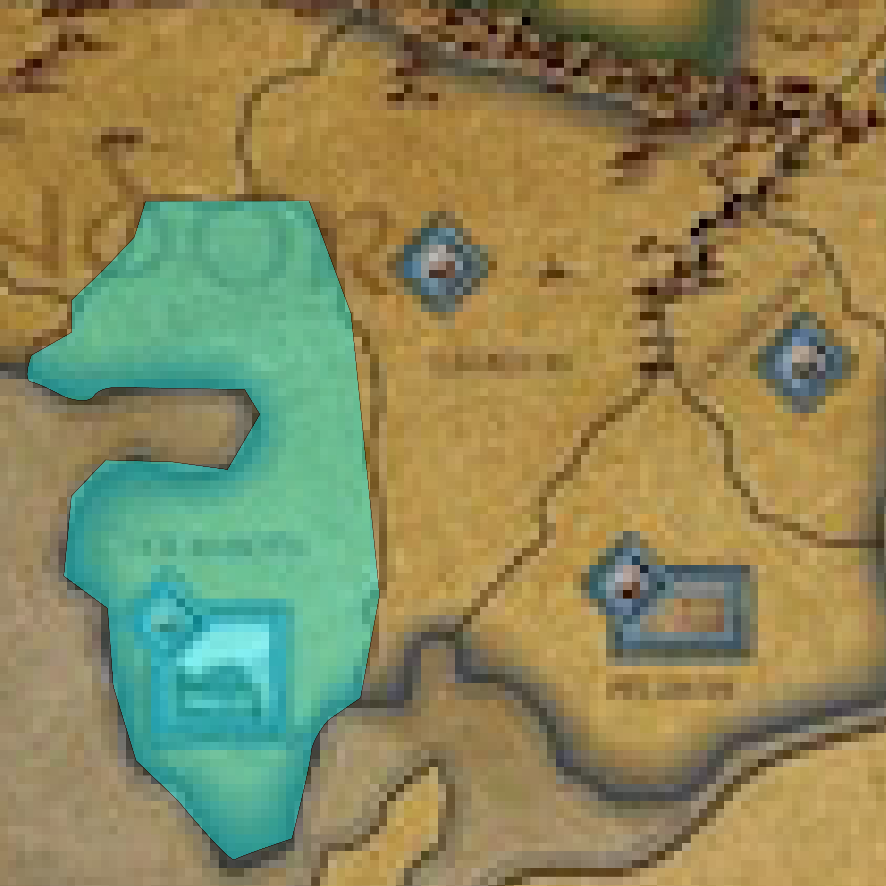

Moving an army
move armies towards enemie armies, settlements; place them strategically to threaten settlements.
The Character die also lets you move an army, but only if the army contains a leader or character
Movement
You can only recruit units of a nation using a die, if all of the following are fulfilled
- You can move two different armies with one army movement die into an adjacent region. You can never move the same unit twice using the same die result!
- If you move one army into a region with units of another army, you cannot move the whole merged army again. this would move some units twice, which is not allowed.
which types of units and how many units?
You can move a whole army or split an army:
- An army can consist of regular units, elite units, leaders and characters. All these count as an army. You can move all of them.
- You can also split an army and move only part of it into an adjacent reagion, leaving the rest behind. Can the rest move into a different region?
after moving into a region you can nat have more than 10 units (regular + elite) in a region. but unlimited characters and leaders.
If there are enemy army units in adjacent reagions, you can not move into these reagions. Instead, you can attack an army in an adjacent reagion with the army die result.
Where can I move armies to
Armies of nations at war
Armies of nations that are at war can
- enter any region that are free from other enemy units
example  - enter any region with friendly units and merge with them
This includes following cases:
- enter a reagion within their border or a friendly nations border that contains an enemy controlled settlement, but no enemy units (Re-capture)
- This happens if your enemy captured one of your settlements, but then either moved on with his whole army and left no units. You reconquer the settlement without a battle. Your oppenent loses the VP the settlement was worth: Cities are worth 1 VP, Strongholds 2VP. This counts towards military victory.
- This happens if your enemy captured one of your settlements, but then either moved on with his whole army and left no units. You reconquer the settlement without a battle. Your oppenent loses the VP the settlement was worth: Cities are worth 1 VP, Strongholds 2VP. This counts towards military victory.
- enterenemies nation reagions of enemy controlled settlements without enemy units within (capture enemy settlements and gain VP)
- If an opponent leaves a settlement undefended, you can move in and capture it. You gain the VP the settlement is worth. This counts towards military victory.
- enter regions with enemy controlled strongholds if the stronghold is under siege by friendly nation
Armies of nations at not war
armies of nations not at war suffer limitations. Check on how to advance on the political track
- can move outside their borders, but can not enter regions of other nations (friendly or enemy)
- inside their borders and neutral regions they can still:
- enter a reagion within their border that contains an enemy controlled settlement, but no enemy units (reconquer)
- enter regions with enemy controlled strongholds if the stronghold is under siege by friendly nation
- You can never cross black border between two regions.
- Exception of not being allowed to move ino other nations border is a reatret froma battle.
when moving an army consisting of units of two nations, one of them not at war, keep in mind that units of this nation can not enter enemy territory or attack enemies armies.
Army Movement and the Political track
Movement of armies into other nations borders affects the diplomatic status of the nations whose borders have been crossed.
Activating Nations
- whenever an enemy army enters a ragion within the border of a nation, its marker gehts flipped to active, if not already.
- whenever an enemy army can freely enter a reagion with an an undefendend nations settlement (because there were no units), the settlement gets captured. Aggressor receives Victory points, the marker gets flipped and advanced one box.